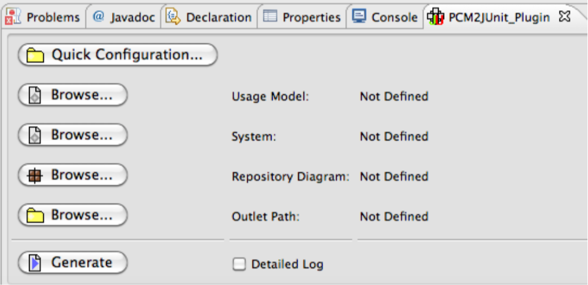

|

|
PCM2JUnit_Plugin
Eclipse plugin to automatically generate test scripts from Palladio Component Models
Description:
As part of my bachelor thesis, an Eclipse plug-in was developed that reads in Palladio models and generates performance test code.
The generated code is Java-based and uses the test frameworks JUnit and JUnitPerf.
To implement the code generation, the plugin uses the openArchitectureWare technology with Xpand templates for model-to-text transformation.
With the help of this plug-in, performance test code was generated using the example of Palladio models for the CoCoME software project.
This code could be completed manually in a few places provided for this purpose.
In addition to familiarization with the technical basics, a strategy for the interpretation of Palladio models for performance tests and their implementation in Java was developed.
Supported Platforms:
Windows, OS X, Linux (Eclipse required)
Last Update:
28.02.2013
Links:
|